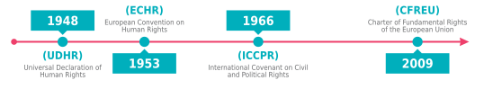

1.1.
Зошто оваа брошура за интернет и слобода на изразување?
Интернетот значително го промени нашиот живот во изминатите години во многу области, вклучувајќи го и начинот на пристап до и објавување на информации. Но, она што е најважно, го подобри остварувањето на нашите права на слобода на изразување како со овозможување на пристап до разни извори на информации, така и со значително демократизирање на отвореното објавување на било каков вид на информации.
„Со оглед на неговата достапност и неговиот капацитет за складирање и соопштување на огромни количини на информации, Интернетот игра важна улога во подобрувањето на пристапот на јавноста до вести и воопшто олеснувањето на ширењето на информациите.“
Times Newspapers Ltd против Обединетото Кралство (бр. 1 и 2), ЕСЧП, 2009 Резиме на предметот
Times Newspapers Limited против Обединетото Кралство (бр. 1 и 2), Жалби бр. 3002/03 и 23676/03, Пресуда 10 март 2009
Европскиот суд за човекови права одлучи дека немало непропорционално мешање во слободата на печатот согласно Член 10 од Европската конвенција за човекови права кога на весникот му било наложено од страна на судовите да објави известување во неговите интернет архиви во кое објавува дека две статии се предмет на судска постапка за клевета и не смеат да се умножуваат ниту користат без консултација со неговиот правен оддел.
Пресуда: http://hudoc.echr.coe.int/eng?i=001-91706
Правни резимеа и коментари: http://hudoc.echr.coe.int/eng?i=002-1623
Следствено, ова ја претвори слободата на изразување - особено во онлајн средината - во тема која ги засега сите, а не само новинарите или невладините организации кои се занимаваат со слобода на изразување.
Експресивната активност генерирана од корисниците на интернет обезбедува невидена платформа за остварување на слободата на изразување.
Delfi AS против Естонија 2015 [Голем судски совет], ЕСЧП, 2015 Резиме на предметот
Delfi AS против Естонија (Голем Судски Совет), жалба бр. 64569/09, Пресуда 16 јуни 2015
Компанијата жалител поседувала еден од најголемите интернет портали во Естонија. Во 2006 година, откако објавила статија на порталот за фериботска компанија, голем број на коментари кои содржеле лични закани и навредлив јазик упатени кон сопственикот на фериботската компанија биле објавени во статијата. Delfi AS ги отстрани навредливите коментари, на барање на адвокатите на сопственикот на фериботската компанија, околу шест недели по нивното објавување. Беше покрената постапка за клевета против компанијата жалител, на која на крајот и беше наложено да плати 320 евра отштета. Препознавајќи ја „значајната корист која може да се извлече Интернетот во остварувањето на слободата на изразување“, Судот потврди дека не постои повреда на Член 10 и „одговорноста за клевета или други видови на незаконски говор, во принцип, мора да се задржи и претставува ефективен правен лек за повредите на правата на приватност“.
Пресуда: http://hudoc.echr.coe.int/eng?i=001-155105
Правни резимеа и коментари:
Исто така стана неопходно информациите што ги објаснуваат основните концепти околу слободата на изразување и судската практика да се поедностават и да и се објаснат на широката публика која може да биде заинтересирана за оваа тема.
„функцијата на блогерите и популарните корисници на социјалните медиуми може да биде асимилирана од онаа на јавните чувари ", доколку се работи за заштитата од член 10."
Предмет Magyar Helsinki Bizottság против Унгарија [Голем судски совет], ЕСЧП, 2016 Резиме на предметот
Magyar Helsinki Bizottság против Унгарија, жалба бр. 18030/11, Пресуда 8 ноември 2016
Предметот произлезе од жалба поднесена до Судот од страна на унгарскиот Хелсиншки комитет, откако националните власти го одбија пристапот на комитетот до информациите за адвокатите на одбраната по службена должност назначени од две полициски станици. Судот утврдил дека имало повреда на правото на слобода на изразување на невладината организација-жалител и ги артикулирал четирите критериуми за проценка дали забраната на пристапот до информациите што ги поседува државата го засега член 10 од Конвенцијата.
Пресуда: http://hudoc.echr.coe.int/eng?i=001-167828
Правни резимеа и коментари:
Иако голем број книги и правни истражувања за судиите или другите правници се објавени на оваа тема, ние веруваме дека сега има уште поголема потреба да се поедностават и објаснат основите на слободата на изразување, особено оние кои се применува во дигиталниот свет. Сето ова е претставено низ призмата на сегашната судска практика на Европскиот суд за човекови права (ЕСЧП), што треба да биде главната референтна точка за сите европски интернет корисници.
Идејата за оваа брошура се појави исто така како резултат на неколку лични искуства од работата поврзана со слободата на изразување во изминатите години:
Прво, се чини дека темата е интересна не само за професионалните новинари, туку и за разни други корисници на интернет кои имаат многу различно образование и во суштина не многу познавање од правото. Сепак, сите тие се вклучени во пренесување на информации на интернет и понекогаш тврдат дека е извршена повреда на нивните права на слобода на изразување.
Второ, процесот на донесување одлуки за политиките во врска со слободата на изразување се чини дека честопати е избрзан, без да се овозможи доволно време за долги јавни дебати или за користење на детални или сеопфатни извештаи, како основа за одлуките. Ова особено важи за одредени земји во Јужна и Источна Европа. Затоа, извадоците од аргументите и заклучоците на ЕСЧП можат да бидат широко прифатени референтни точки и, како последица на тоа, корисна алатка за одбрана во дебатата.
Трето, во однос на протокот на информации достапен денес, многу корисници бараат лесно разбирливи, дестилирани информации со цел да го обликуваат своето мислење (а не огромни текстови со правнички жаргон кои би можеле да изгледаат далечни или од друг век).
Но, ние веруваме дека повеќето од одлуките и аргументите за слобода на изразување во судската пракса на ЕСЧП се лесно разбирливи за пошироката публика, доколку се презентираат правилно.
„Членот 10 од Конвенцијата ја гарантира слободата на изразување на " сите ". Таа не прави никаква разлика во однос на тоа дали целта која треба да се постигне е остварување на добивка или не. "
Neij и Sunde Kolmisoppi против Шведска, ЕСЧП, 2013 Резиме на предметот
Neij и Sunde Kolmisoppi против Шведска, жалба бр. 40397/12, Одлука 19 февруари 2013
Овој предмет се однесуваше на жалбата на двајца од основачите на "The Pirate Bay", една од најголемите светски веб-страници за споделување на torrent-датотеки, дека со нивната осуда за соучество во извршување на кривични дела поврзани со прекршување на Законот за авторски права извршена е повреда на нивната слобода на изразување .
Судот ја прогласи жалбата за недопуштена како очигледно неоснована. Тој одлучи дека споделувањето или дозволувањето на другите да споделуваат, датотеки од ваков вид на Интернет, дури и материјал заштитен со авторски права и заради остварување на профит, било опфатено со правото на "примање и пренесување информации" според членот 10 (слобода на изразување ) од Конвенцијата. Меѓутоа, судот одлучи дека домашните судови правилно ги избалансирале конкурентните интереси - на пример, правото на жалителите да примаат и да пренесуваат информации и потребата за заштита на авторските права - при осудата на жалителите.
Пресуда: http://hudoc.echr.coe.int/eng?i=001-117513
Правни резимеа и коментари: http://hudoc.echr.coe.int/eng?i=002-7408
1.2.
Слобода на изразување. Од каде да почнеме?
Слободата на изразување е широко употребувано, многупати кршено, а сепак недоволно разбрано основно право.
Кога не ни се допаѓа она што некој го кажува, сакаме тој да биде замолчен и опоменат.
Кога сакаме нешто да кажеме, наводно на истиот начин како и говорот со кој не се согласуваме, мислиме дека имаме право слободно да го сториме тоа.
Но ретко размислуваме зошто имаме основно право на слобода на изразување, за што е корисно и зошто и кога и како ова право ќе биде ограничено.
Слободата на изразување "се применува не само за
"информации" или "идеи" кои се примени со одобрување или се сметаат за ненавредливи или ве оставаат рамнодушни, туку и за оние што навредуваат, шокираат или вознемируваат. Такви се барањата на плурализмот, толеранцијата и широките сфаќања без кои нема "демократско општество"
.
Axel Springer против Германија [Голем судски совет], ЕСЧП, 2012 Резиме на предметот
Axel Springer против Германија [Голем судски совет], Жалба бр. 48311/10, Пресуда 7 февруари 2012
Друштвото жалител е издавач на национален дневен весник со голем тираж кој во септември 2004 година на насловната страница објави статија за ѕвездата на популарната телевизиска серија која беше уапсена на фестивалот за пиво во Минхен за поседување на кокаин. Статијата беше дополнета со подетален напис на друга страница. Веднаш по објавувањето на оваа статија, актерот прибавил судска забрана за секое понатамошно објавување на статијата. Друштвото жалител се жалеше на забраната што му била изречена против известувањето за апсењето и осудата од актерот за кој станува збор.
Судот одлучи дека имало повреда на членот 10 (слобода на изразување) на Конвенцијата, утврдувајќи дека ограничувањата кои му биле наметнати на друштвото жалител не биле разумно пропорционални на легитимната цел за заштита на угледот или правата на другите.
Пресуда: http://hudoc.echr.coe.int/eng?i=001-145700
Правни резимеа и коментари: http://hudoc.echr.coe.int/eng?i=002-9955
Не постои договорено размислување кое дава одговор на горенаведените изјави. Добрата вест е дека постојат многу мудреци по политичка филозофија, правни документи и судски одлуки кои ни даваат некои насоки. И уште подобра вест е дека, бидејќи правното и судското спроведување на ова право во различни контексти е секогаш динамично, секој може да каже нешто и да влијае на начинот на спроведување на политиката. За да го сториме тоа, треба подобро да ги разбереме основните постулати на ова право.
Резиме на некои од клучните концепти зад правото на слобода на изразување е наведено подолу.
Што е слобода на изразување?
„Слободата на изразување претставува еден од основните постулати на едно демократско општество и еден од основните услови за неговиот напредок и за самореализација на секој поединец.“
Axel Springer против Германија [Голем судски совет], ЕСЧП, 2012 Резиме на предметот
Axel Springer против Германија [Голем судски совет], Жалба бр. 48311/10, Пресуда 7 февруари 2012
Друштвото жалител е издавач на национален дневен весник со голем тираж кој во септември 2004 година на насловната страница објави статија за ѕвездата на популарната телевизиска серија која беше уапсена на фестивалот за пиво во Минхен за поседување на кокаин. Статијата беше дополнета со подетален напис на друга страница. Веднаш по објавувањето на оваа статија, актерот прибавил судска забрана за секое понатамошно објавување на статијата. Друштвото жалител се жалеше на забраната што му била изречена против известувањето за апсењето и осудата од актерот за кој станува збор.
Судот одлучи дека имало повреда на членот 10 (слобода на изразување) на Конвенцијата, утврдувајќи дека ограничувањата кои му биле наметнати на друштвото жалител не биле разумно пропорционални на легитимната цел за заштита на угледот или правата на другите.
Пресуда: http://hudoc.echr.coe.int/eng?i=001-145700
Правни резимеа и коментари: http://hudoc.echr.coe.int/eng?i=002-9955
-
Таа е важен инструмент за слободата на мислата
-
Таа овозможува свесни избори кои се базираат на почитувањето на одредени вредности, а со тоа дава индивидуална автономија и го дефинира идентитетот на секој поединец.
-
Таа придонесува кон знаењето и разбирањето, преку дебатирање за општествените и моралните вредности и обезбедува пазар на идеи
-
Таа овозможува соопштување на политички идеи, а со тоа придонесува за демократијата
-
Гради толеранција со тоа што им овозможува на другите да се изразат
-
Придонесува кон уметнички развој, и го олеснува академскиот и научен напредок
1
Од што се состои слободата на изразување?
-
правото на ширење информации, во сите форми и облици, и;
-
правото да другите да ги примаат.
Слободата на изразување
"се однесува не само на содржината на информациите туку и на средствата за нивно ширење, бидејќи секое ограничување наметнато врз средствата нужно го попречува правото на примање и пренесување информации".
Özturk против Турција [Голем судски совет], ЕСЧП, 1999
Зошто ја ограничуваме слободата на изразување?
-
Бидејќи им штети на остварувањето на други права (правото на приватност, правото на правично судење, правото на слобода на мислата, совеста и религијата) или ги пречекорува основните граници за човекови права (забраната на дискриминација и забраната на злоупотреба на права)
-
Бидејќи не се прави со добра волја (објавување на недоволно потврдени факти), чист навредлив јазик кој не служи за дебата од јавен интерес, и слично)
-
Бидејќи е штетна и не е од јавен интерес
-
Бидејќи го загрозува зачувувањето на демократијата или законот и редот (откривање државни тајни, претставува ризик за кршење на мирот итн.),
„Како што е наведено во член 10, слободата на изразување подлежи на исклучоци, кои, сепак, мора да се толкуваат строго, а потребата за какви било ограничувања мора да се утврди како неопходна.“
Axel Springer против Германија [Голем судски совет], ЕСЧП, 2012 Резиме на предметот
Axel Springer против Германија [Голем судски совет], Жалба бр. 48311/10, Пресуда 7 февруари 2012
Друштвото жалител е издавач на национален дневен весник со голем тираж кој во септември 2004 година на насловната страница објави статија за ѕвездата на популарната телевизиска серија која беше уапсена на фестивалот за пиво во Минхен за поседување на кокаин. Статијата беше дополнета со подетален напис на друга страница. Веднаш по објавувањето на оваа статија, актерот прибавил судска забрана за секое понатамошно објавување на статијата. Друштвото жалител се жалеше на забраната што му била изречена против известувањето за апсењето и осудата од актерот за кој станува збор. Судот одлучи дека имало повреда на членот 10 (слобода на изразување) на Конвенцијата, утврдувајќи дека ограничувањата кои му биле наметнати на друштвото жалител не биле разумно пропорционални на легитимната цел за заштита на угледот или правата на другите.
Пресуда: http://hudoc.echr.coe.int/eng?i=001-145700
Правни резимеа и коментари: http://hudoc.echr.coe.int/eng?i=002-9955
Какви треба да бидат овие ограничувања?
-
Да бидат утврдени со закон
-
Да имаат легитимна цел (да ги штитат другите права или интереси)
-
Да бидат неопходни во демократско општество (мора да постои итна општествена потреба)
-
Да бидат пропорционални
Изразувањето може да има различни форми: кажани и писмени зборови, уметнички дела, филмови, театарска музика, други изведувачки уметности или настани, вклучувајќи го и уништувањето на имотот, кога таквото дело има "говорна" содржина (примери од реалниот живот би вклучиле горење од националното знаме, фрлање канта со боја врз статуа). Воздржувањето од изразување е исто така форма на правото на слобода на изразување (право да се молчи).
Слободата на изразување опфаќа широк спектар на комуникации, од политички израз, до академска, уметничка или комерцијална комуникација, при што секоја од нив добива различни нивоа на заштита. Слободата на изразување го вклучува правото на пристап до информации, што во случај на новинари може да значи да се добие пристап во јавна институција, вклучувајќи ги и судовите, или до јавен документ, вклучувајќи и податоци на тајните служби. Од друга страна пак, доколку се работи за граѓани, тоа би можело да значи дека нема цензура за пристап до информации на Интернет.
Изразувањето може да се пренесе преку разни канали: печатени медиуми, книги, писма, постери, канали за емитување и, се разбира, во изминатите години, главно преку Интернет.
1.3.
1.3. Слободата на изразување како основно право
Како основно човеково право, правото на слобода на изразување е загарантирано со голем број релевантни документи и договори од меѓународното право.
Универзалната декларација за човекови права усвоена од Генералното собрание на Обединетите нации во 1948 година го гарантира правото на слобода на говорот во членот 19, како што го гарантира и Меѓународниот пакт за граѓански и политички права усвоен од истото тело во 1966 година; исто така според член 19.
Повелбата за основните права на Европската унија беше усвоена во 2000 година од страна на Европскиот парламент, Советот на министри и Европската комисија и стапи во сила во 2009 година и се смета за "Устав" на Европската унија. Исто така, го заштитува правото на слобода на изразување според членот 11.
Од посебно значење е Европската конвенција за човекови права (ЕКЧП) на Советот на Европа, отворена за потпишување во 1950 година, која ја вклучува слободата на изразување во член 10. Таа стапи во сила во 1953 година и беше изменета, во текот на годините, со усвојувањето на 16 протоколи
2
. Некои протоколи кон Конвенцијата сè уште не се ратификувани од секоја земја. Европскиот суд за човекови права е тело кое го надгледува спроведувањето на Конвенцијата во 47 земји-членки на Советот на Европа.
Бидејќи Европската конвенција за човекови права претставува главен инструмент за човекови права за државите на Советот на Европа, оваа брошура главно се фокусира на јуриспруденцијата развиена од страна на Европскиот суд за човекови права.

ЧЛЕН 10 од Европската конвенција за заштита на човековите права
Слобода на изразување
- 1
-
Секој човек има право на слобода на изразувањето. Ова право ги опфаќа слободата на мислење и слободата на примање и пренесување информации или идеи, без мешање на јавната власт и без оглед на границите. Овој член не ги спречува државите да им наметнуваат лиценци на радиодифузните, телевизиските претпријатија или кината.
- 2
-
Остварувањето на овие слободи, коешто вклучува обврски и одговорности, може да подлежи на одредени формалности, услови, ограничувања и санкции предвидени со закон, кои во едно демократско општество претставуваат мерки неопходни за државната безбедност, територијалниот интегритет и јавната безбедност, заштитата на редот и спречувањето на нереди и злосторства, заштитата на здравјето или моралот, угледот или правата на другите, за спречување на ширењето на доверливи информации или за зачувување на авторитетот и непристрасноста на судството.
.
1.4.
Како да се разбере оваа брошура
Обемот на правото на слобода на изразување се заснова на менување на филозофските, политичките и правните концепти. Треба да се анализира воведување на специфични географски, правни и социјални контексти. Во најголем дел тоа вклучува воспоставување рамнотежа со остварувањето на други права и основни вредности.
Затоа, предметите претставени во оваа брошура треба да служат само како упатување. Судската практика како онаа на ЕСЧП се менува постојано, а понекогаш е во судир и самата со себе. Понекогаш може да подлежи и на критика, бидејќи од време на време резултира со разочарувачки исходи за оние кои ги промовираат основните права на слобода на изразување и пристап до информации. Освен тоа, техничкиот развој на интернетот може да промени одредени претпоставки што ги имаме денес и кои би можеле да бидат вклучени во идните одлуки.
Сепак, таквата судска практика како онаа на ЕСЧП може многупати да биде визионерска и има големо значење во промоцијата на основните стандарди со кои законски се доделуваат правата на слобода на изразување и пристап до информации.
Цената што треба да се плати во однос на дестилирањето на целата постоечка судска практика на ЕСЧП вреди да се укаже. Прво, информациите во оваа брошура во никој случај не претставуваат правен совет. Второ, уредниците на брошурата мораа да ги ограничат информациите што треба да се презентираат, избор што за одредени правници може да биде недостаток. Исто така, со оглед на избраните домени и предмети, бевме приморани некои прашања да ги разгледаме многу кратко - како што се прашањата за "говор на омраза" или "заштита на новинарски извори".
Исто така, со цел да се поедностави текстот во верзијата на брошурата, одредени цитати се отстранети од внатрешните упатувања на други предмети или документи на ЕСЧП. Исто така, името на предметот е наведено што пократко, како "Име на тужителите против земјата, година". Предметите по кои одлучил Големиот судски совет се означени како такви. Сите задебелувања на текстот во цитатите го извршија уредниците со цел да ги нагласат главните клучни зборови релевантни за читателот.
Повеќе детали се дадени во веб верзијата, достапна на https://cases.internetfreedom.blog, која вклучува кратко резиме на секој предмет, и линкови до целиот текст на пресудата/одлуката или на правните резимеа.
Треба исто така да признаеме дека нашата работа е потпомогната не само со фактот дека сите информации поврзани со судската пракса на ЕСЧП се јавно достапни на интернет, туку и поради постоењето на разни други проекти и публикации - сите достапни онлајн - кои подетално систематизираат или анализираат голем дел од судската пракса на ЕСЧП која (исто така) се однесува на Член 10.
Тука се наведени најважните, особено за корисниците кои можеби сакаат или имаат потреба подетално да разгледаат некои специфики на слободата на изразување:
-
Кратките прикази по теми за релевантната пракса на судот и предметите во тек собрани од страна на прес службата на Судот
3
-
Агенцијата за основни права - Базата на податоци за судската пракса обезбедува компилација на судска пракса на Европската унија (СПЕУ) и судска пракса на Европскиот суд за човекови права (ЕСЧП) со директно упатување на Повелбата за основните права на Европската унија
4
-
Интернет: релевантна судска пракса на Европскиот суд за човекови права (2015)
5
-
Слобода на изразување во европската релевантна судска пракса во однос на член 10 од Европската конвенција за заштита на човековите права (2007)6
6
-
Слобода на изразување, медиуми и новинари. Релевантна судска пракса на Европскиот суд за човекови права - објавена од Европската аудиовизуелна опсерваторија (2015)
7
-
Водич за примена на член 10 од Европската конвенција за заштита на човековите права – (2004)
Слобода на изразување и клевета - Истражување на релевантната судска пракса на Европскиот суд за човекови права (2016) Текстот е достапен на https://rm.coe.int/16806ac95b Регулаторни власти за медиуми и говор на омраза (2017)
10
-
Блог на Набљудувачите во Стразбур при Центарот за човекови права на Универзитетот Гент во Белгија
11
-
Глобална слобода на изразување - Универзитетот Колумбија - база на податоци од над 1027 предмети ширум светот12
12